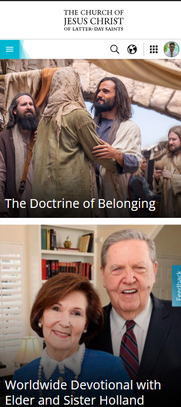

Visual Heirarchy
The Facebook newsfeed is a great example of showing the principle of Visual Hierarchy wherein the menu icons have lesser value; they are comparably smaller. The facebook post of a friend is bigger, wherein the website's developer wanted the user to focus on scrolling and looking at other people's post. There is also the "stories" portion which is of medium value, it has a medium sized portion of the website.
Repetition
Shopee
By looking at the company's website, you can see that color "orange" is very much repeated. This color shows the company's brand, and everytime you look at any part of their page you can see this color. This creates a tendency for the user to incorporate in their mind the company's brand whenever they see orange color. It's their way of attracting users.
White Space and Clean Design
The Church of Jesus Christ of Latter-day Saints
In the restored church's homepage, we can see that there are proper and appropriate white spaces between contents. It makes it comfortable for the users to see the website as a whole. This also shows simplicity and orderliness, it reflects the ideals and principles of the Gospel. It gives the users a meaningful experience while navigating the website.